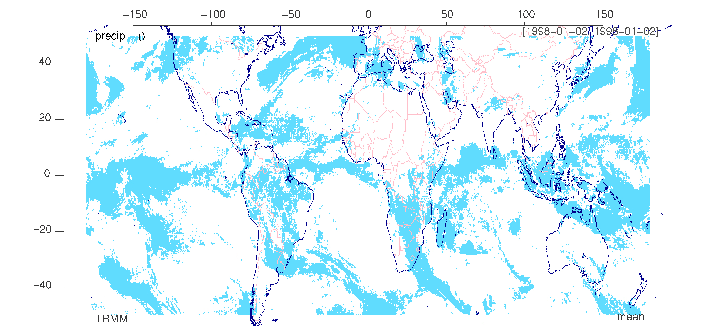
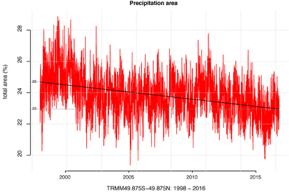
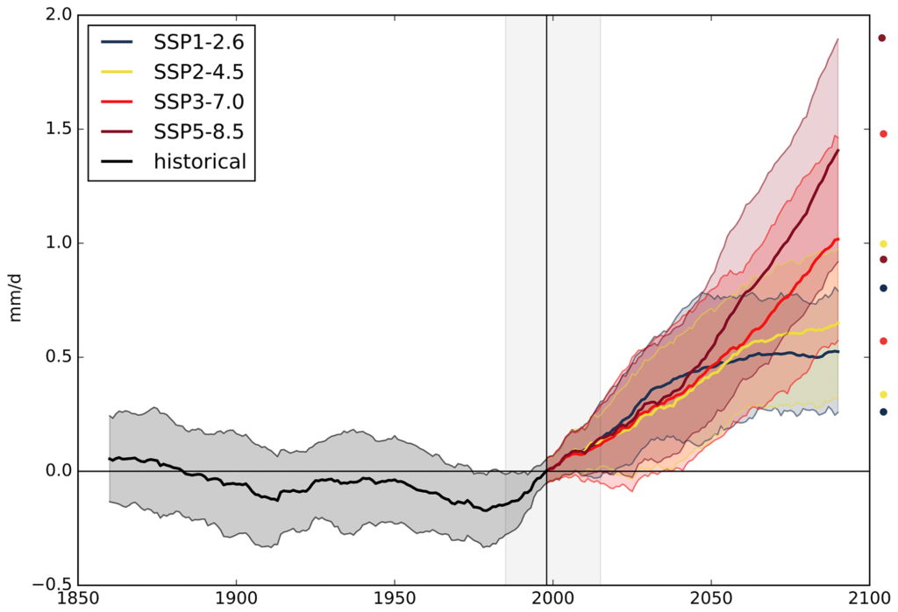
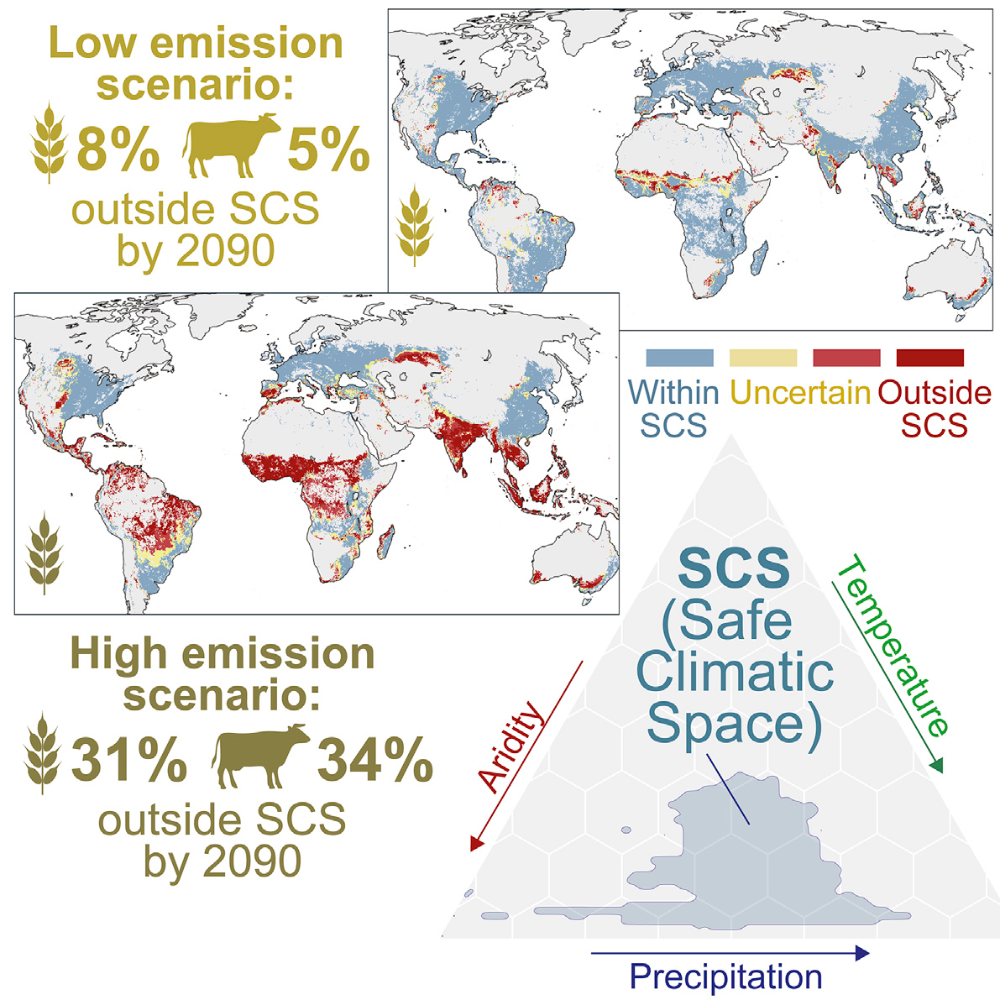
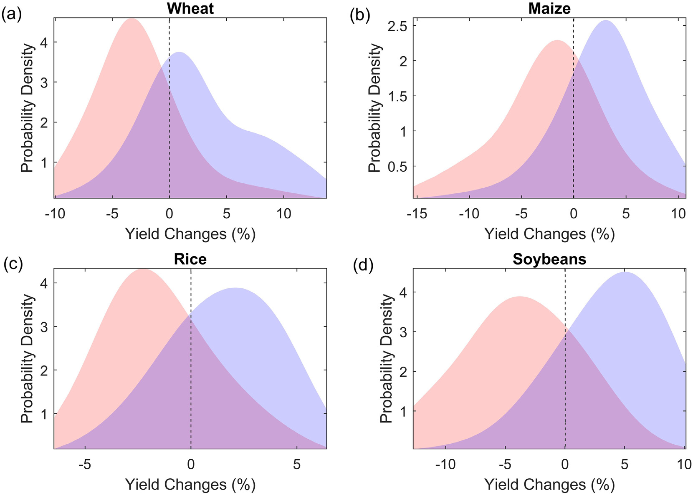

4 Rainfall
4.1 Decreased Globel Precipitation Area
Benestad
The total area with 24 hrs precipitation has shrunk by 7% between 50°S–50°N over the period 1998–2016, according to the satellite-based Tropical Rain Measurement Mission data. A decrease in the daily precipitation area is an indication of profound changes in the hydrological cycle, where the global rate of precipitation is balanced by the global rate of evaporation. This decrease was accompanied by increases in total precipitation, evaporation, and wet-day mean precipitation. If these trends are real, then they suggest increased drought frequencies and more intense rainfall. A linear dependency was also found between the global mean temperature and the 50°S–50°N daily precipitation area with a slope value of −17 × 106km2∕°C.

Figure: Global Rainfall Area on a random day.

Figure: Time series of the rainfall area based on daily TRMM data expressed as the fraction of the total surface area between 50°S–50°N. A linear trend analysis indicates a change in the estimated rainfall area from 25% to 23% over the 1998–2016 period. The trend is statistically significant at the 1% level. (TRMM- Tropical Rainfall Measurement Mission).
The study of the precipitation area AP is both scientifically interesting and important in terms of our understanding of the hydrological cycle and climate change. A 7% decrease in AP over two decades is dramatic, especially if it reflects a real ongoing long-term change. The precipitation between 50°S–50°N dominates the water budget of the global hydrological cycle both because it represents 77% of the surface area and because the precipitation is most intense in the tropics (table 2). One plausible physical explanation for the observed decline may be that an increased rate of atmospheric overturning [7] may have resulted in more convection and precipitation from cumulonimbus type clouds rather than more spatially extensive stratonimbus clouds. Such changes will have consequences even if they only are due to slow natural variability.
A regression analysis suggested that the daily precipitation area diminishes with the global mean temperature, and used with global climate model simulations, crude projections for the future suggested a decrease in daily precipitation area by 28% by 2100. For monthly accumulated precipitation, however, the area appears to experience an increase over time, as the area of monthly precipitation is influenced by migratory phenomena and the area is estimated for amounts that are aggregated over longer time scales.
4.2 Quasi-stationary Rainstorms
Kahraman Abstract
Under climate change, increases in precipitation extremes are expected due to higher atmospheric moisture. However, the total precipitation in an event also depends on the condensation rate, precipitation efficiency, and duration. Here, a new approach following an “ingredients-based methodology” from severe weather forecasting identifies important aspects of the heavy precipitation response to climate change, relevant from an impacts perspective and hitherto largely neglected. Using 2.2 km climate simulations, we show that a future increase in precipitation extremes across Europe occurs, not only because of higher moisture and updraft velocities, but also due to slower storm movement, increasing local duration. Environments with extreme precipitation potential are 7× more frequent than today by 2100, while the figure for quasi-stationary ones is 11× (14× for land). We find that a future reduction in storm speeds, possibly through Arctic Amplification, could enhance event accumulations and flood risk beyond expectations from studies focusing on precipitation rates.
Kahraman Plain language Summary
Intense rainstorms are expected to be more frequent due to global warming, because warmer air can hold more moisture. Here, using very detailed climate simulations (with a 2.2 km grid), we show that the storms producing intense rain across Europe might move slower with climate change, increasing the duration of local exposure to these extremes. Our results suggest such slow-moving storms may be 14× more frequent across land by the end of the century. Currently, almost-stationary intense rainstorms are uncommon in Europe and happen rarely over parts of the Mediterranean Sea, but in future are expected to occur across the continent, including in the north. The main reason seems to be a reduced temperature difference between the poles and tropics, which weakens upper-level winds in the autumn, when these short-duration rainfall extremes most occur. This slower storm movement acts to increase rainfall amounts accumulated locally, enhancing the risk of flash floods across Europe beyond what was previously expected.
Kahraman (2021) Quasi-Stationary Intense Rainstorms Spread Across Europe Under Climate Change (pdf)
4.3 Landslides
The global landslide hotspot is located in South Asia, driven by the summer (SW) monsoon. The monsoon drives a period of intense and prolonged rainfall in the period centred on June to September. Rainfall levels can be high – in some cases the highest in the world. The monsoon also drives convective activity that can cause cloudbursts. Together, these effects trigger large numbers of landslides, with catastrophic outcomes.
Thus, one of the key elements in the understanding of future landslide patterns is to understand the dynamics of the monsoon with climate change – i.e. under future warming. If the monsoon is likely to intensify then we might see more landslides through time. And of course vice versa. The pattern is not simple of course; the monsoon could weaken but rainfall intensity could increase. So understanding the dynamics of the monsoon is key.
A new open access paper has just been published in the journal Earth System Dynamics (Katzenberger et al. 2021) that examines the dynamics of the Indian monsoon under future warming scenarios. To do so it examines the 32 global climate models within the Coupled Model Intercomparison Project Phase 5 (CMIP5) under a range of emission scenarios.
The results are really interesting. As the authors put it:
All of these models show a substantial increase in June-to-September (JJAS) mean rainfall under unabated climate change (SSP5-8.5) and most do also for the other three Shared Socioeconomic Pathways analyzed (SSP1-2.6, SSP2-4.5, SSP3-7.0). Moreover, the simulation ensemble indicates a linear dependence of rainfall on global mean temperature with a high agreement between the models independent of the SSP if global warming is the dominant forcing of the monsoon dynamics as it is in the 21st century; the multi-model mean for JJAS projects an increase of 0.33 mm d−1 and 5.3 % per kelvin of global warming.
These are fascinating results. Under most likely scenarios for future warming the monsoon will strength, with more rainfall on average. In graphical form the figure below displays the outcomes:

Figure: Multi-model mean of Indian summer monsoon rainfall (mm d−1) for the Indian summer monsoon for 1860–2090 relative to the mean (horizontal black line) in 1985–2015 (grey background) for the four scenarios (SSP1-2.6, SSP2-4.5, SSP3-7.0 and SSP5-8.5). The 20-year smoothed time series of one ensemble member per model was used to calculate the multi-model mean. Shading in the time series represents the range of mean plus/minus 1 standard deviation marked with circles on the right side of the figure. Image and caption (lightly edited) from Katzenberger et al. (2021).
Interestingly, the models project that both the west coast of India and the Himalaya region will show substantial increases in monsoon precipitation. These are the areas most affected by landslides. The models also suggest greater interannual variability, indicating that some years will be exceptionally wet.
Studies like this provide a general expectation for future behaviour. There will be nuances of course that require further investigation, such as the impacts on cloudburst rainfall and the interaction between the atmosphere and the topography. But in general terms, the models suggest that we might expect to see increased landslide activity driven by the summer monsoon with time. Coupled with the ongoing environmental degradation in the Himalayas, especially through haphazard road construction, the picture for future landslide impacts is poor. Strategies to adapt to future warming are urgently required.
4.4 Water availability
Abstract Konapala
Accessibility of water resources for human consumption and ecosystems largely depends on the spatio-temporal distribution of both precipitation and evaporation. As a result, changes in characteristics of precipitation and evaporation due to human-caused climate change in the 21st century may result in changes in water availability (WA) that have implications for both humans and the biosphere. Previous studies have elucidated trends in precipitation in terms of both annual mean, seasonal variation, and the distribution of extreme events. Studies have also examined the corresponding changes in evaporation characteristics. Though the combined monthly distribution of precipitation and evaporation have widespread implications for regional hydrology, crop yield, and ecology, few studies have examined the concomitant changes in both annual mean and seasonal variation in these variables. Moreover, the existing global climate classifications that form the basis for WA studies rarely consider seasonal variation characteristics from a non-parametric standpoint, even though they vary in a complex manner across global land regions.
Konapala (2021) Water Availability (pdf)
4.4.1 Energy Crops takes away Water
Billions more people could have difficulty accessing water if the world opts for a massive expansion in growing energy crops to fight climate change, research has found.
The idea of growing crops and trees to absorb CO2 and capturing the carbon released when they are burned for energy is a central plank to most of the Intergovernmental Panel on Climate Change’s scenarios for the negative emissions approaches needed to avoid the catastrophic impacts of more than 1.5°C of global warming.
But the technology, known as bioenergy with carbon capture and storage (BECCS), could prove a cure worse than the disease, at least when it comes to water stress.
Fabian Stenzel at the Potsdam Institute for Climate Impact Research in Germany and his colleagues project that the water needed to irrigate enough energy crops to stay under the 1.5°C limit would leave 4.58 billion people experiencing high water stress by 2100 – up from 2.28 billion today. That is 300 million more people than a scenario in which BECCS isn’t used at scale and warming spirals to a devastating 3°C.
“I was a little bit shocked. The takeaway message is, so far, we haven’t looked at side effects enough. To limit all the trade-offs that we might face in terms of climate change and climate change mitigation, it’s really important to look at the holistic Earth system,” says Stenzel.
Stenzel
Bioenergy with carbon capture and storage (BECCS) is considered an important negative emissions (NEs) technology, but might involve substantial irrigation on biomass plantations. Potential water stress resulting from the additional withdrawals warrants evaluation against the avoided climate change impact. Here we quantitatively assess potential side effects of BECCS with respect to water stress by disentangling the associated drivers (irrigated biomass plantations, climate, land use patterns) using comprehensive global model simulations. By considering a widespread use of irrigated biomass plantations, global warming by the end of the 21st century could be limited to 1.5 °C compared to a climate change scenario with 3 °C. However, our results suggest that both the global area and population living under severe water stress in the BECCS scenario would double compared to today and even exceed the impact of climate change. Such side effects of achieving substantial NEs would come as an extra pressure in an already water-stressed world and could only be avoided if sustainable water management were implemented globally.
4.5 Agricultural Productivity
Despite important agricultural advancements to feed the world in the last 60 years, a Cornell-led study shows that global farming productivity is 21% lower than it could have been without climate change. This is the equivalent of losing about seven years of farm productivity increases since the 1960s.
The future potential impacts of climate change on global crop production has been quantified in many scientific reports, but the historic influence of anthropogenic climate change on the agricultural sector had yet to be modeled.
The scientists and economists developed an all-encompassing econometric model linking year-to-year changes in weather and productivity measures with output from the latest climate models over six decades to quantify the effect of recent human-caused climate change on TFP.
The results show clearly that adaption efforts must look at the whole supply chain, including labor and livestock. Even as agriculture becomes more mechanized and sophisticated, the sensitivity to weather does not go away.
This study is a big leap beyond the traditional focus on a few major grain crops. By looking at the whole system – the animals, the workers, the specialty crops – we can see that the entire agricultural economy is quite sensitive to weather. It seems that in agriculture, practically everything gets harder when it’s hotter.
Agricultural research has fostered productivity growth, but the historical influence of anthropogenic climate change (ACC) on that growth has not been quantified. We develop a robust econometric model of weather effects on global agricultural total factor productivity (TFP) and combine this model with counterfactual climate scenarios to evaluate impacts of past climate trends on TFP. Our baseline model indicates that ACC has reduced global agricultural TFP by about 21% since 1961, a slowdown that is equivalent to losing the last 7 years of productivity growth. The effect is substantially more severe (a reduction of ~26–34%) in warmer regions such as Africa and Latin America and the Caribbean. We also find that global agriculture has grown more vulnerable to ongoing climate change.
A third of global food production will be at risk by the end of the century if greenhouse gas emissions continue to rise at their current rate, new research suggests.
Many of the world’s most important food-growing areas will see temperatures increase and rainfall patterns alter drastically if temperatures rise by about 3.7C, the forecast increase if emissions stay high.
Researchers at Aalto University in Finland have calculated that about 95% of current crop production takes place in areas they define as “safe climatic space”, or conditions where temperature, rainfall and aridity fall within certain bounds.
If temperatures were to rise by 3.7C or thereabouts by the century’s end, that safe area would shrink drastically, mostly affecting south and south-eastern Asia and Africa’s Sudano-Sahelian zone, according to a paper published in the journal One Earth on Friday.
Climate change risks pushing 1/3 of food production outside safe climatic space.
Kummu
We developed the novel concept of safe climatic space, which allows us, for the first time, to identify the climatic conditions under which food production developed during the stable Holocene climate conditions. We show that nearly one-third of global food crop production and over one-third of livestock production could be forced beyond these suitable conditions by 2081–2100 if we cannot limit the warming to 1.5–2 C. The most vulnerable areas would be South and Southeast Asia and Africa’s Sudano- Sahelian Zone.

Jägermeyr Abstract
Potential climate-related impacts on future crop yield are a major societal concern. Previous projections of the Agricultural Model Intercomparison and Improvement Project’s Global Gridded Crop Model Intercomparison based on the Coupled Model Intercomparison Project Phase 5 identified substantial climate impacts on all major crops, but associated uncertainties were substantial. Here we report new twenty-first-century projections using ensembles of latest-generation crop and climate models. Results suggest markedly more pessimistic yield responses for maize, soybean and rice compared to the original ensemble. Mean end-of-century maize productivity is shifted from +5% to −6% (SSP126) and from +1% to −24% (SSP585)—explained by warmer climate projections and improved crop model sensitivities. In contrast, wheat shows stronger gains (+9% shifted to +18%, SSP585), linked to higher CO2 concentrations and expanded high-latitude gains. The ‘emergence’ of climate impacts consistently occurs earlier in the new projections—before 2040 for several main producing regions. While future yield estimates remain uncertain, these results suggest that major breadbasket regions will face distinct anthropogenic climatic risks sooner than previously anticipated.
4.5.1 Synchronized Low Yields
Kornhuber Abstract
Simultaneous harvest failures across major crop-producing regions are a threat to global food security. Concurrent weather extremes driven by a strongly meandering jet stream could trigger such events, but so far this has not been quantified. Specifically, the ability of state-of-the art crop and climate models to adequately reproduce such high impact events is a crucial component for estimating risks to global food security. Here we find an increased likelihood of concurrent low yields during summers featuring meandering jets in observations and models. While climate models accurately simulate atmospheric patterns, associated surface weather anomalies and negative effects on crop responses are mostly underestimated in bias-adjusted simulations. Given the identified model biases, future assessments of regional and concurrent crop losses from meandering jet states remain highly uncertain. Our results suggest that model-blind spots for such high-impact but deeply-uncertain hazards have to be anticipated and accounted for in meaningful climate risk assessments.
4.5.2 Crop Yield Draught Sensitivity
Leng Abstract
Understanding the potential drought impacts on agricultural production is critical for ensuring global food secu- rity. Instead of providing a deterministic estimate, this study investigates the likelihood of yield loss of wheat, maize, rice and soybeans in response to droughts of various intensities in the 10 largest producing countries. We use crop-country specific standardized precipitation index (SPI) and census yield data for 1961–2016 to build a probabilistic modeling framework for estimating yield loss risk under a moderate (−1.2 b SPI b −0.8), severe (−1.5 b SPI b −1.3), extreme (−1.9 b SPI b −1.6) and exceptional (SPI b −2.0) drought. Results show that there is N80% probability that wheat production will fall below its long-term average when experiencing an exceptional drought, especially in USA and Canada. As for maize, India shows the highest risk of yield reduc- tion under droughts, while rice is the crop that is most vulnerable to droughts in Vietnam and Thailand. Risk of drought-driven soybean yield loss is the highest in USA, Russian and India. Yield loss risk tends to grow faster when experiencing a shift in drought severity from moderate to severe than that from extreme to the exceptional category, demonstrating the non-linear response of yield to the increase in drought severity. Sensitivity analysis shows that temperature plays an important role in determining drought impacts, through reducing or amplifying drought-driven yield loss risk. Compared to present conditions, an ensemble of 11 crop models simulated an in- crease in yield loss risk by 9%–12%, 5.6%–6.3%, 18.1%–19.4% and 15.1%–16.1 for wheat, maize, rice and soybeans by the end of 21st century, respectively, without considering the benefits of CO 2 fertilization and adaptations. This study highlights the non-linear response of yield loss risk to the increase in drought severity. This implies that adaptations should be more targeted, considering not only the crop type and region but also the specific drought severity of interest.
Leng Memo
Global agricultural productivity has exhibited substantial variations during the past decades, and crop yield reductions are often observed when dry conditions occurred. Overall, crop yield variability can be explained by the drought index (i.e. SPI) for the study period.

*Fig: Conditional probability distribution of yield changes (%) relative to its long-term mean under moderate drought (red) and wet (blue) conditions for (a) wheat, (b) maize, (c) rice and (d) soybeans.
Results show a significant association between droughts and yield reductions during the past decades. When experiencing an excep- tional drought, the probability of yield loss could exceed 70% for soy- bean and maize, while the risk for wheat and rice is up to 68% and 64%, respectively. This prediction represents an increase of yield loss risk by 24%, 21%, 18% and 20% for soybean, maize, rice and wheat, re- spectively, when drought severity grows from moderate to the excep- tional category. Notably, the rate of risk growth tends to become slower with increase in drought severity, suggesting the non-linear response of yields to droughts. Regionally, the risk of drought-driven wheat reduction is the highest in USA and Canada, where there is N80% probability that wheat reduction may fall below its long-term av- erage given an exceptional drought. As for maize, India shows the highest risk of yield reduction, while rice yield in Vietnam and Thailand are most vulnerable to droughts. Risk of soybean yield reduc- tion is the highest in USA, Russian and India, while relatively low risk is observed in other regions. Further analysis based on 11 process- based model simulations shows that yield loss risk will increase in the future, with the largest growth found for rice followed by soybeans, wheat and maize.
Leng (2018) Crop yield sensitivity of global major agricultural countries to droughts and the projected changes in the future (pdf)
Big yield losses for all 4 major crops expected in our hot, dry new world, while food demand is forecast to double by 2050. During heat and drought, plants close their pores to prevent dehydration. Doing so also means they can’t absorb CO2 for photosynthesis. Tsakraklides (2023) Twiiter Comment